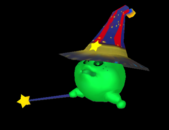

11 |
Basisregels en informatie |
 |
Basisregels De vier personages slaan om de beurt tegen de kristallen bol. De uitkomst van de kristallen bol bepaalt hoeveel vakjes je vooruit mag. Terwijl het wagentje het door de kristallen bol aangegeven aantal vakjes vooruit gaat, kun je met de cursor munten en edelstenen oppakken. Als het wagentje terechtkomt op een vakje dat munten geeft of afpakt, krijgt of verliest elke speler de aangegeven hoeveelheid munten. De kosten van perkamentrollen worden gelijk verdeeld over alle spelers, net als de boete voor een fout wachtwoord. De spelers krijgen alleen verschillende hoeveelheden geld door het oppakken van munten en edelstenen van het bord, of door het spelen van minispellen of uitdagingen op het bord. Je verliest het spel als je wagentje helemaal is verwoest en je geen geld meer hebt om het te repareren. Als de spelers het juiste wachtwoord raden, winnen ze het spel en krijgen ze de schat van Fazzy. Hierop volgt het laatste minispel, de finale, waarna de ranglijst wordt opgemaakt op basis van het verzamelde geld. De spelers krijgen ook een trofee en een titel op basis van hun prestaties. Als je bijvoorbeeld een topscore behaalt, krijg je de titel Mansion Captain (huisleider). Als de spelers het verkeerde wachtwoord invoeren, verliezen ze 200 munten (alle spelers dragen zoveel mogelijk bij aan deze boete, afhankelijk van hun hoeveelheid munten) en gaat het spel verder. Als de spelers echter al hun munten kwijt zijn, is het spel voorbij. Nadat de spelers vijf aanwijzingen hebben verzameld, kunnen ze Answer (antwoord) kiezen om het juiste wachtwoord te raden of de aanwijzingen en het wachtwoord terugzetten en doorgaan met spelen. Hebben de spelers echter minder dan vijf aanwijzingen verzameld, dan zijn er drie mogelijkheden: het wachtwoord proberen te raden, de aanwijzingen en het wachtwoord terugzetten en doorgaan met spelen of doorgaan zonder de aanwijzingen terug te zetten. Het terugzetten kost wel 200 munten, dus wees voorzichtig. Als je niet genoeg geld hebt, dan zijn er twee slechts mogelijkheden: doorgaan met spelen of een juist antwoord raden! Informatie
Je kunt een van de vier personages kiezen: een jongen, een meisje, een butler of een oude man.
Fazzy is een vriend die je tijdens het avontuur advies geeft en hints verkoopt.
De vier personages zitten in het magische wagentje van Fazzy en gaan samen op avontuur. In de uitdaging Spookwedstrijd kunnen de spoken op het wagentje schieten en het beschadigen. Als het wagentje helemaal is verwoest, moet je het direct laten repareren voor 500 munten. Als de spelers niet genoeg geld hebben, dan is het spel over. Wagentjes die alleen zijn beschadigd en nog niet zijn verwoest, kunnen alleen worden gerepareerd als je op een reparatievakje terechtkomt. Als je aan de beurt bent om tegen de kristallen bol te slaan, kun je het schadeniveau van het wagentje bekijken door de cursor erop te plaatsen.
Magische perkamentrollen bevatten aanwijzingen die je kunt gebruiken om het wachtwoord voor de schat te achterhalen.  De spelers kunnen worden verkleind door een Toverspook, zodat ze bepaalde locaties kunnen bereiken. Als de spelers deze locaties verlaten, krijgen ze van het Toverspook hun normale grootte terug. Het Toverspook verschijnt alleen bij de ingang van enkele speciale locaties.
Je gebruikt het icoontje met de kristallen bol om te bepalen hoeveel vakjes het wagentje vooruit mag. In de hoeken van het scherm zie je de icoontjes van de personages. Je ziet informatie over de speler en de hoeveelheid geld die hij of zij heeft verdiend. |


 |
 |
 |